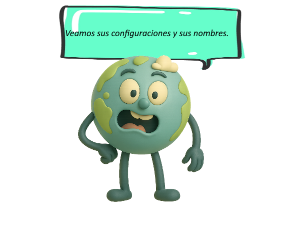
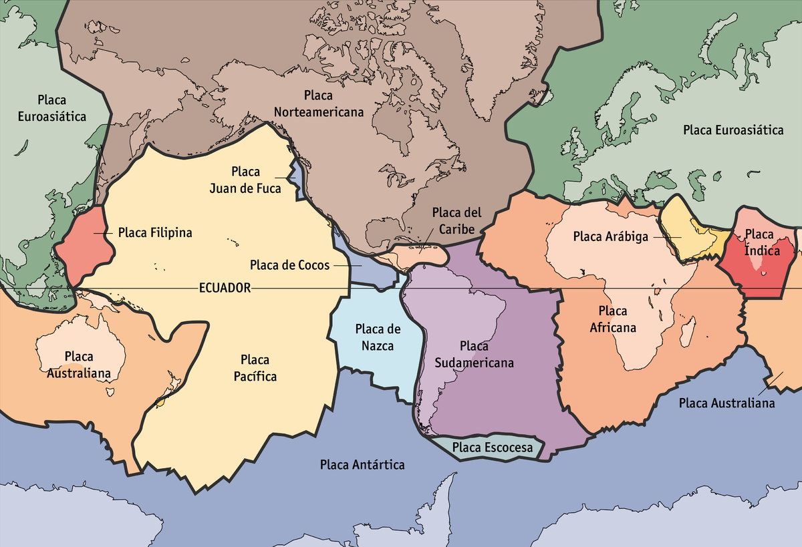
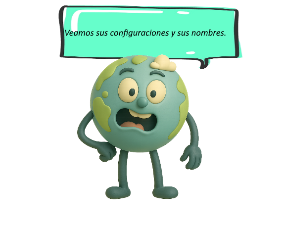
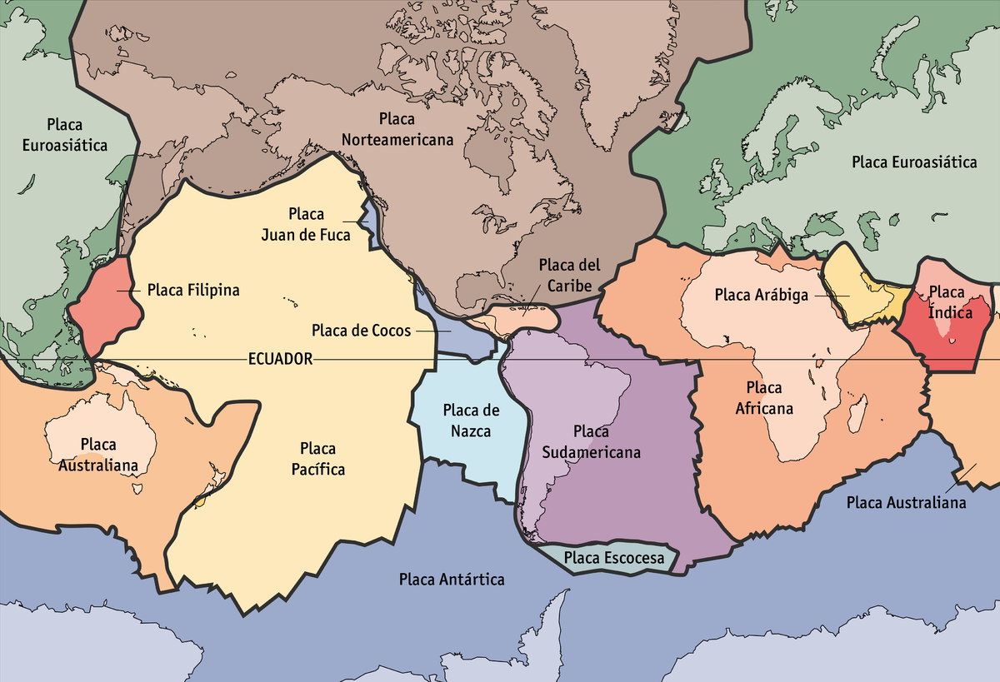

En la unión de las placas tectónicas se presentan diferentes bordes.

Te invitamos a observar las características de los mismos:

En la unión de las placas tectónicas se presentan diferentes bordes.

Te invitamos a observar las características de los mismos:
Los bordes transformantes de placas tectónicas son estructuras geológicas que están relacionados con la expansión del piso oceánico y las dorsales oceánicas en la teoría de la tectónica de placas.
En los bordes transformantes no se crea ni se destruye material rocoso, mas bien funciona como fallas geológicas de desgarre.
Hay que mencionar que los bordes transformantes no se limitan solamente a las dorsales oceánicas y también ocurren en el continente, un ejemplo es la falla de San Andrés.
Los bordes divergentes de placas ocurren cuando dos placas tectónicas oceánicas o continentales se separan por el proceso de expansión del lecho marino (fondo oceánico). Hay que tener en cuenta que no se desarrolla un espacio abierto entre placas divergentes.
Por el contrario, a medida que las placas tectónicas se separan, la nueva litosfera oceánica se forma continuamente a lo largo de los bordes divergentes.
Los bordes convergentes de placas, ocurren cuando dos placas tectónicas se mueven una hacia la otra y al menos una de las placas es oceánica. Pero en lugar de chocar mutuamente, una placa oceánica se dobla y se hunde en la astenosfera debajo de la otra placa debido a su diferencia de densidades.
Los bordes convergentes pueden ocurrir entre dos placas oceánicas o una placa oceánica y continental, donde la placa oceánica siempre es la que se hunde.
La placa litosférica oceánica es más densa que la continental, por lo que favorece al proceso conocido como subducción.
La sismicidad o terremotos se originan en las zonas donde dos placas colisionan, o se deslizan una junto a la otra.
El vulcanismo se produce tanto en las zonas de rift como en las zonas de subducción, (subducción o hundimiento de la litosfera). Esto hace que disminuya la extensión de océano cuyo borde está subduciendo.
El plegamiento y fracturación sucede sobre las rocas que forman la litosfera, debido a las grandes presiones que ejercen los empujes de unas placas sobre otras.
Formación de relieves: el plegamiento de la litosfera provoca su engrosamiento y origina cadena de montañas.
Hallar las palabras ocultas.
Obra publicada con Licencia Creative Commons Reconocimiento No comercial Compartir igual 4.0